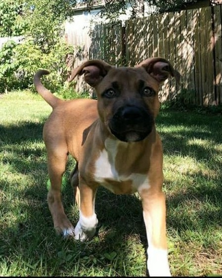

 Mamba Age: 1 Sex: M Good with: ☐ Children ☑ Cats ☑ Dogs Activity: High Size: Small Arrived: 27 Jun 2020 Mamba is recovering from a sprained ankle, but otherwise, is a strong and healthy dog. One of his talents is learning new tricks. He likes playing with other animals and would adjust well to a home with other pets. Adopt me!